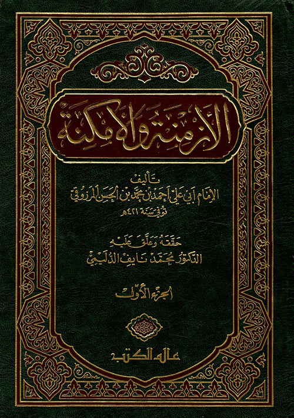
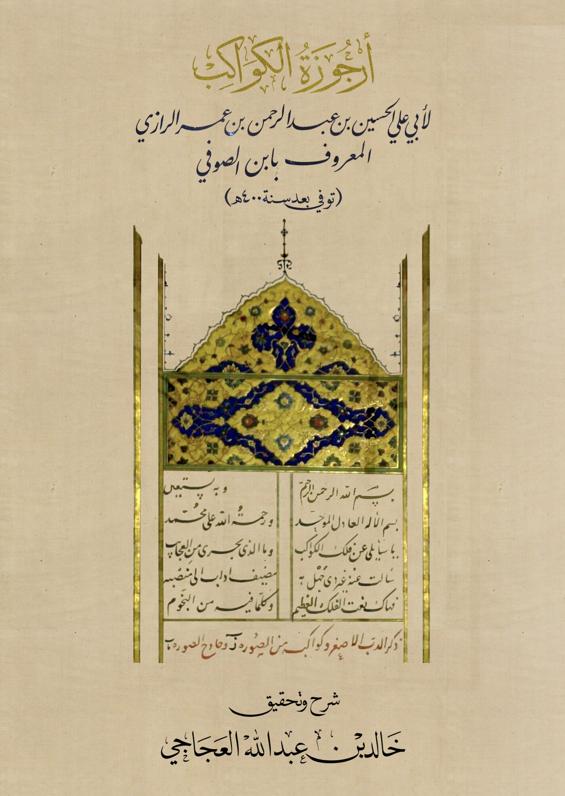
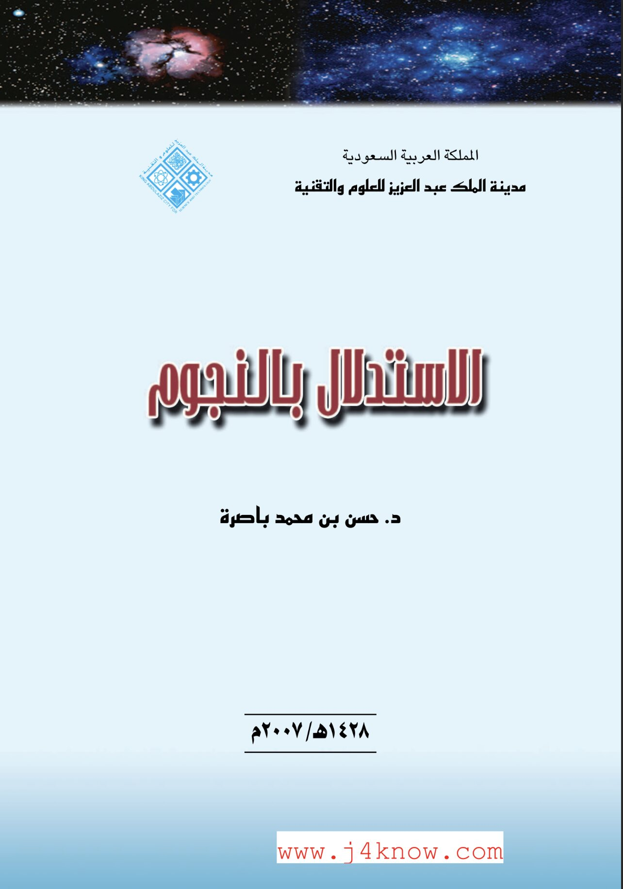
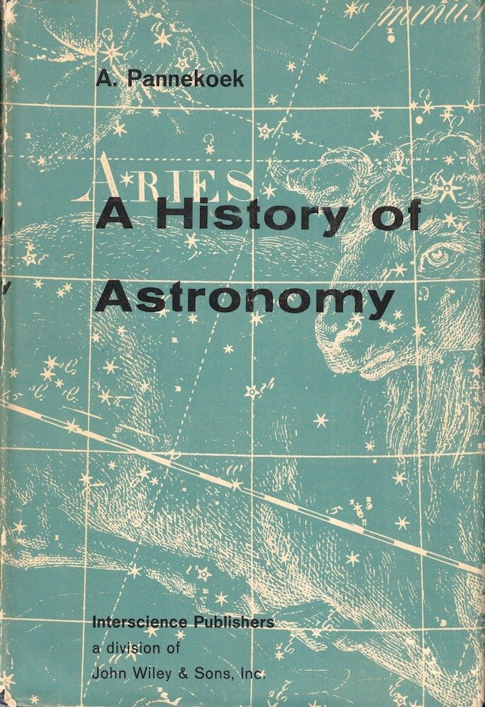
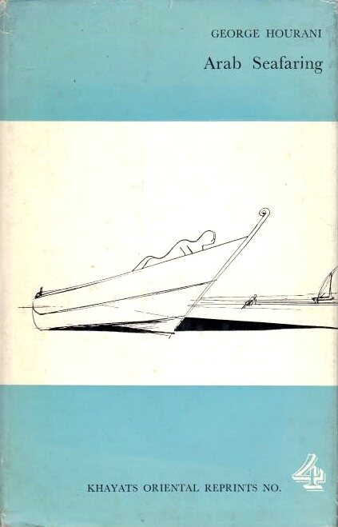

5
Resources المصادر








More books (including English)
القران و الفلك:
وَءَايَةٌ لَّهُمُ الَّيْلُ نَسْلَخُ مِنْهُ النَّهَارَ فَإذَا هُم مُّظْلِمُونَ * وَالشَّمْسُ تَجْرِى لِمُسْتَقَرٍ لَّهَا ذَلِكَ تَقْدِيرُ الْعَزِيزِ الْعَلِيمِ * وَالْقَمَرَ قَدَّرْنَاهُ مَنَازِلَ حَتَّى عَادَ كَالْعُرْجُونِ الْقَدِيمِ * لا الشَّمْسُ يَنْبَغِى لَهَآ أَن تُدْرِكَ الْقَمَرَ وَلا الَّيْلُ سَابِقُ النَّهَارِ وَكُلٌّ فِى فَلَكٍ يَسْبَحُونَ
وَهُوَ الَّذِى خَلَقَ الَّيْلَ وَالنَّهَارَ وَالشَّمْسَ وَالْقَمَرَ كُلٌّ فِى فَلَكٍ يَسْبَحُونَ
(وَءَايَةٌ لَّهُمُ الَّيْلُ نَسْلَخُ مِنْهُ النَّهَارَ فَإذَا هُم مُّظْلِمُونَ
وَالشَّمْسُ تَجْرِى لِمُسْتَقَرٍ لَّهَا * ذَلِكَ تَقْدِيرُ الْعَزِيزِ الْعَلِيمِ * وَالْقَمَرَ قَدَّرْنَاهُ مَنَازِلَ حَتَّى عَادَ كَالْعُرْجُونِ الْقَدِيمِ
وَهُوَ الَّذِى جَعَلَ لَكُمُ النُّجُومَ لِتَهْتَدُواْ بِهَا فِى ظُلُمَاتِ الْبَرِ وَالْبَحْرِ قَدْ فَصَّلْنَا الآيَاتِ لِقَوْمٍ يَعْلَمُونَ
هُوَ الَّذِى جَعَلَ الشَّمْسَ ضِيَآءً وَالْقَمَرَ نُورًا وَقَدَّرَهُ مَنَازِلَ لِتَعْلَمُواْ عَدَدَ السِنِينَ وَالْحِسَابَ مَا خَلَقَ اللَّهُ ذَلِكَ إلاَّ بِالْحَقِ يُفَصِلُ الآيَاتِ لِقَوْمٍ يَعْلَمُونَ * إنَّ فِى اخْتِلافِ الَّيْلِ وَالنَّهَارِ وَمَا خَلَقَ اللَّهُ فِى السَّمَاوَاتِ وَالأَرْضِ لآيَاتٍ لِقَوْمٍ يَتَّقُونَ) (يونس: 5 - 6).
وَلَقَدْ جَعَلْنَا فِى السَّمَآءِ بُرُوجًا وَزَيَّنَّاهَا لِلنَّاظِرِينَ) (الحجر: 14 -16).
(وَعَلامَاتٍ وَبِالنَّجْمِ هُمْ يَهْتَدُونَ) (النحل: 16)
(وَجَعَلْنَا الَّيْلَ وَالنَّهَارَ ءَايَتَيْنِ فَمَحَوْنَآ ءَايَةَ الَّيْلِ وَجَعَلْنَآ ءَايَةَ النَّهَارِ مُبْصِرَةً لِتَبْتَغُواْ فَضْلاً مِن رَّبِكُمْ وَلِتَعْلَمُواْ عَدَدَ السِنِينَ وَالْحِسَابَ وَكُلَّ شَىْءٍ فَصَّلْنَاهُ تَفْصِيلاً) (الإسراء: 12)
(إنَّا زَيَّنَّا السَّمَآءَ الدُّنْيَا بِزِينَةٍ الكَوَاكِبِ) (الصافات: 6).
فَلآ أُقْسِمُ بِمَوَاقِعِ النُّجُومِ * وَإِنَّهُ لَقَسَمٌ لَّوْ تَعْلَمُونَ عَظِيمٌ) (الواقعة: 75 - 76).
وَالسَّمَآءِ ذَاتِ الْبُرُوجِ * وَالْيَوْمِ الْمَوْعُودِ) (البروج: 1 - 2).
وَالشَّمْسِ وَضُحَاهَا * وَالْقَمَرِ إِذَا تَلاهَا (الشمس)
This page is still being updated...